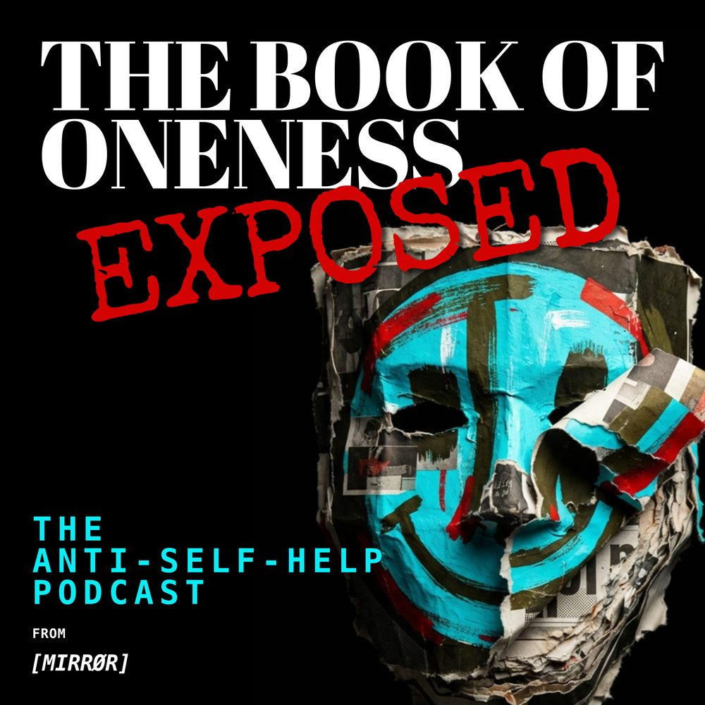
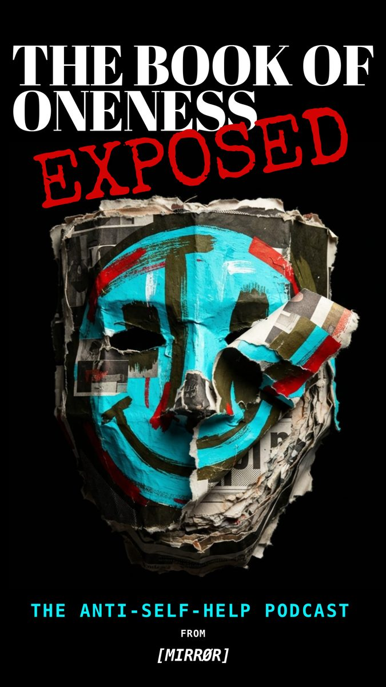

// THE BOOK OF ONENESS Exposed
EPISODE 22 · BIRTH OF LANGUAGE
Releasing soon. The Fracture read in full, then examined by two voices.
FRACTURE 22 OF 143
The first words
were not concepts.
They were calls.
// From the printed text

Releasing soon. The Fracture read in full, then examined by two voices.

// EPISODE 22 · SOON